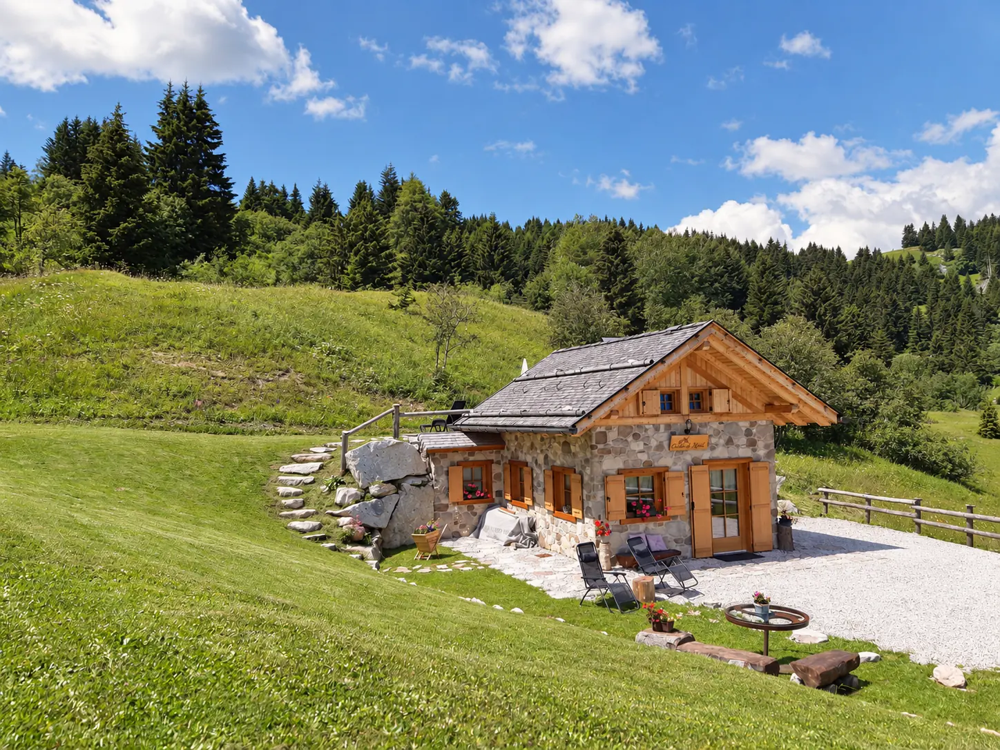
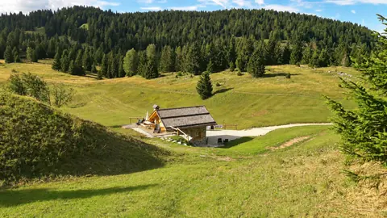
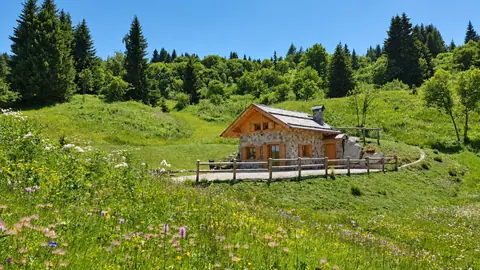

MONTE PELLER · VAL DI NONCHALET
↓CHALET
AL MONT
01 — THE CHALET
The warmth
of the chalet
The chalet is for your exclusive use and sleeps up to five guests. Downstairs, the wooden kitchen and large dining table are where everyone comes together — over a good meal, an unhurried conversation and the crackle of the wood-burning stove.
Upstairs, the bedroom overlooks the meadows of Monte Peller. Wake up to the view, take your time and let the pace of the mountains make room for a proper break.
Explore the spaces ↗




02 — THE SETTINGThe freedom
The freedom
to slow down
At the chalet, nature sets the pace and the rush of everyday life feels a long way off. Head out through woods and open mountain scenery, stopping at an alpine hut for local specialities. Or stay a little longer over lunch, let the conversation wander and spend the afternoon on the grass with a good book. There’s no need to keep an eye on the time.
03 — THE SPACESThe chalet,
The chalet,
up close
From the kitchen table to the sun loungers on the terrace, every space has its place in the day. Take a closer look at the rooms and details, and start picturing yourself at home here.


Bedroom


Sun terrace and outdoor spaces


04 — GETTING HEREGetting
Getting
here
From Tuenno, in the central part of Val di Non, follow the mountain road for around 8 km towards Monte Peller. The road has asphalt and concrete sections. Parking is right beside the chalet, so you can unload your bags and settle in without rushing. Switch off the engine. Your holiday starts here!
05 — CONTACT
Contact
You’ve seen the chalet. Now meet the family behind it: we’re the Dallagos. We like to think that your next holiday could begin right here, in a place that means so much to us.
For availability, information or a quote, get in touch directly or fill in the form below.